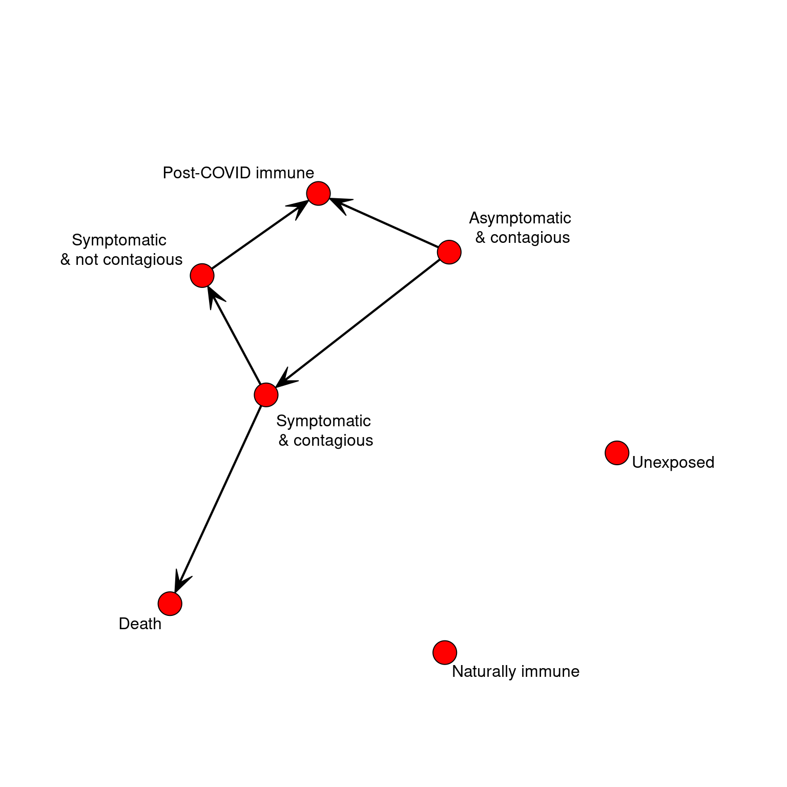
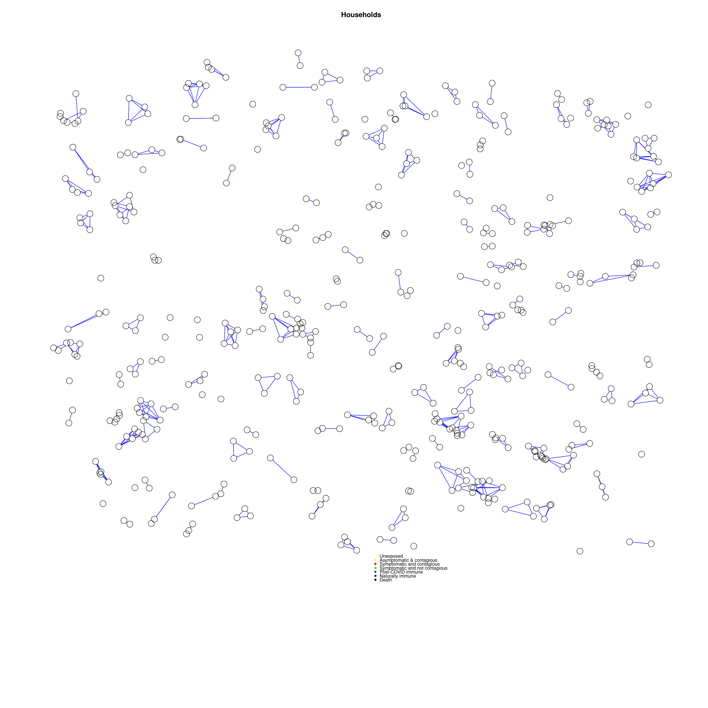
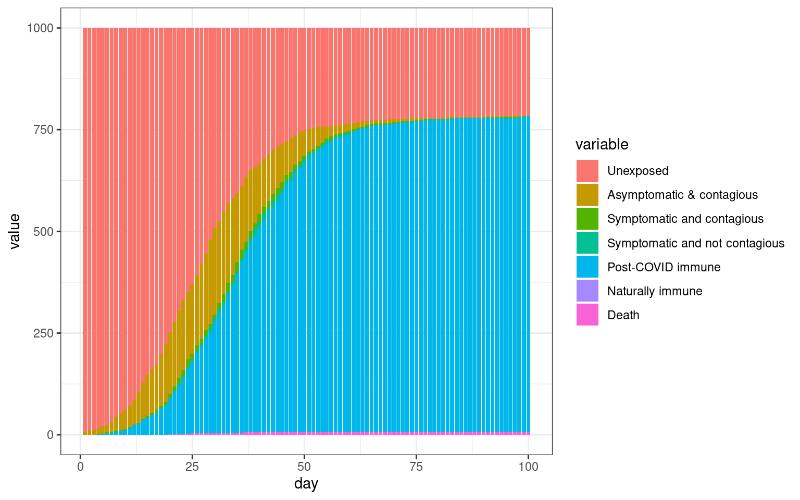
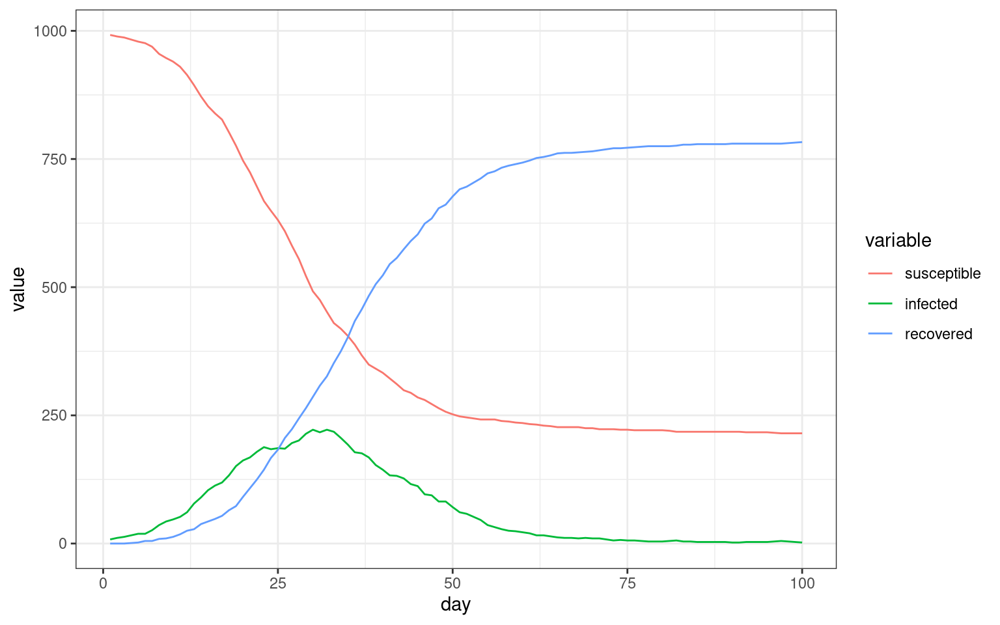
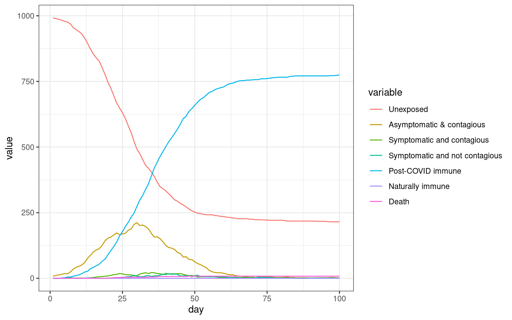

Modeling psychological impacts on epidemic spread: Demographic networks
Definitions
This model is based on the model/simulation found found here.
We will try to incorporate opinion dynamics, network modeling, and a bit of the game theory to understand epidemic spread.
The agent
We will use a simplified task network model to represent the biological progression of the disease. First, let’s suppose that an agent has two states: its psychological state and its biological state. psychological state might be ‘practicing distancing’, ‘believes conspiracy theory’, ‘in quarantine’, and we can explore these later. Let’s just consider everyone is in a generic ‘informed’ state [1].
The biological state has a few specific cases:
- Unexposed
- Asymptomatic but infected/contagious
- Symptomatic and contagious
- Symptomatic and not contagious
- Post-COVID Immune
- Naturally immune (will not contract)
- Death
We could identify several others, but this might be fine. So, we can define the agent according to just two numbers. We might assume that initially, most people are in bio-state 1, but some would be in state 6 already, which is essentially the same as state 5.
We will just define these as a named list.
##
## Attaching package: 'dplyr'## The following objects are masked from 'package:stats':
##
## filter, lag## The following objects are masked from 'package:base':
##
## intersect, setdiff, setequal, union## Loading required package: statnet.common##
## Attaching package: 'statnet.common'## The following object is masked from 'package:base':
##
## order## Loading required package: network## network: Classes for Relational Data
## Version 1.16.0 created on 2019-11-30.
## copyright (c) 2005, Carter T. Butts, University of California-Irvine
## Mark S. Handcock, University of California -- Los Angeles
## David R. Hunter, Penn State University
## Martina Morris, University of Washington
## Skye Bender-deMoll, University of Washington
## For citation information, type citation("network").
## Type help("network-package") to get started.## sna: Tools for Social Network Analysis
## Version 2.5 created on 2019-12-09.
## copyright (c) 2005, Carter T. Butts, University of California-Irvine
## For citation information, type citation("sna").
## Type help(package="sna") to get started.##
## Attaching package: 'igraph'## The following objects are masked from 'package:sna':
##
## betweenness, bonpow, closeness, components, degree, dyad.census,
## evcent, hierarchy, is.connected, neighborhood, triad.census## The following objects are masked from 'package:network':
##
## %c%, %s%, add.edges, add.vertices, delete.edges, delete.vertices,
## get.edge.attribute, get.edges, get.vertex.attribute, is.bipartite,
## is.directed, list.edge.attributes, list.vertex.attributes,
## set.edge.attribute, set.vertex.attribute## The following objects are masked from 'package:dplyr':
##
## as_data_frame, groups, union## The following objects are masked from 'package:stats':
##
## decompose, spectrum## The following object is masked from 'package:base':
##
## union#library(animation)
STATES <<- 7
STATENAMES <<- c("Unexposed",
"Asymptomatic & contagious",
"Symptomatic and contagious",
"Symptomatic and not contagious",
"Post-COVID immune",
"Naturally immune",
"Death")
STATELABELS <<- c("Unexposed","Asymptomatic\n & contagious",
"Symptomatic \n& contagious",
"Symptomatic \n& not contagious",
"Post-COVID immune",
"Naturally immune",
"Death")
makeAgent <- function(psych,bio)
{
return (list(psychstate=psych,biostate=bio))
}
print(makeAgent(1,2))## $psychstate
## [1] 1
##
## $biostate
## [1] 2Timecourse and Biological model
We need a way to transition the biological state in a reasonable way, much like a task network model that keeps track of time of sub-events. This should consider ONLY the natural progression of the disease. We will model timecourse on a timecourse of 1-day units.
An easy way to do this is with ballistic events. That is, we can keep track of the next transition point for any state, if it is programmed at the beginning. This is similar to how I implemented this in the task network model, but a bit simpler because we only have to worry about changes each day.
Create transition matrix.
If on each timestep we could move between states probabilistically, this would be a markov process. We could represent this by a simple transition network. If we represented the possible transitions in a network, that would simplify the logic above. But we need more like a task network because the time taken to transition matters. To keep it simple, Let’s make all timing distributions uniform with a min and max parameter for time in each state. We can program two pathways through the stages, with a couple branch points (death vs recovery; the possibility of recovering after acquiring with no symptoms). The progression of the disease is completely specified by the data, and a generic update function will automatically progress the agent each day.
# * 1. Unexposed
# * 2. Asymptomatic but infected/contagious
# * 3. Symptomatic and contagious
# * 4. Symptomatic and not contagious
# * 5. Post-COVID Immune
# * 6. Naturally immune (will not contract)
# * 7. Death
bioTransition <- matrix(0,STATES,STATES)
bioMin <- matrix(1,STATES) #state time minimum
bioMax <- matrix(1,STATES) #state time maximum
bioMin[2] <- 3 #infected but asymptomatic for 3 to 10 days
bioMax[2] <- 15
bioTransition[2,3] <- .15 #transition to infected with symptoms
bioTransition[2,5] <- .85 #transition to no longer contagious/cured
bioMin[3] <- 3 #symptoms + contagion
bioMax[3] <- 8 #symptoms + contagion max
bioTransition[3,4] <- .95 #transitioon to no longer contagious
bioTransition[3,7] <- .05 #transitioon to death state
bioMin[4] <- 1 #symptoms bot no longer contagiious
bioMax[4] <- 7
bioTransition[4,5] <- 1 #Transition to 'immune' cured state.
setAgentState<- function(agent, biostate)
{
agent$biostate <- biostate
if(sum(bioTransition[biostate,])>0) # this state transitions to something else.
{
##which state do we go to?
agent$biostatecountdown <- sample(x=seq(bioMin[biostate],bioMax[biostate]),1) #how long will we state in this state?
agent$nextbiostate <- sample(1:STATES, prob=bioTransition[agent$biostate,],size=1)
} else{
agent$biostatecountdown <- NA
agent$nextbiostate <- NA ##just so we can tell if the agent is finished.
}
return(agent)
}
transitionAgent<- function(agent)
{
return(setAgentState(agent,agent$nextbiostate))
}
updateAgent<- function(agent)
{
if(!is.na(agent$biostatecountdown))
{
agent$biostatecountdown <- agent$biostatecountdown -1
if(agent$biostatecountdown <=0) ##new state
{
agent <- transitionAgent(agent)
}
}
return(agent)
}
If we start an agent in an unexposed state, nothing happens. Agent’s do not just naturally develop the disease. We can just update the agent until there is no next-state programmed.
Social model
This is not quite right, because we’d really expect interactions to be clumpy–you interact with the same people every day, but this model is like the opinion dynamics model in that anyone can interact with anyone. Let’s make a network using preferential attachment to represent that social world. We can make a couple of them and add them together to represent how we each have different types of relationships and interactions–you may be the president of your drama club and so are a central member, but you are also in a pottery class where you don’t talk to very many people (although your teacher does).



